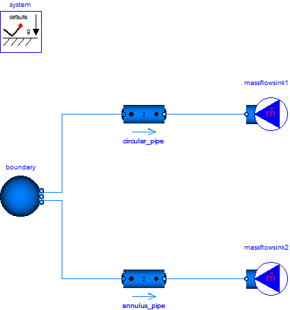

NonCircularPipesComparing a circular with a non-circular pipe |
|
Diagram
{kind=link}
Information
This information is part of the Modelica Standard Library maintained by the Modelica Association.
In this example two pipes are used to demonstrate the use of circular (default) and non-circular pipes, where the topmost pipe is circular with a length of 100 m and an inner diameter of 10 mm and the second pipe is a circular ring pipe with inner diameter of 5 mm and an outer diameter of 15 mm.
Both pipes are connected to a pT source (water, 293.15 K, 10 bar) and a mass flow sink (0.1 kg/s inflow).
Although the hydraulic diameter of both pipes are the same, the different cross sections lead to different velocities and by this different outlet pressures (7.324 bar for the circular pipe versus 9.231 bar for the circular ring pipe).

Components (6)
| system |
Type: System |
|
|---|---|---|
| boundary |
Type: Boundary_pT |
|
| massflowsink1 |
Type: MassFlowSource_T |
|
| massflowsink2 |
Type: MassFlowSource_T |
|
| circular_pipe |
Type: DynamicPipe |
|
| annulus_pipe |
Type: DynamicPipe |